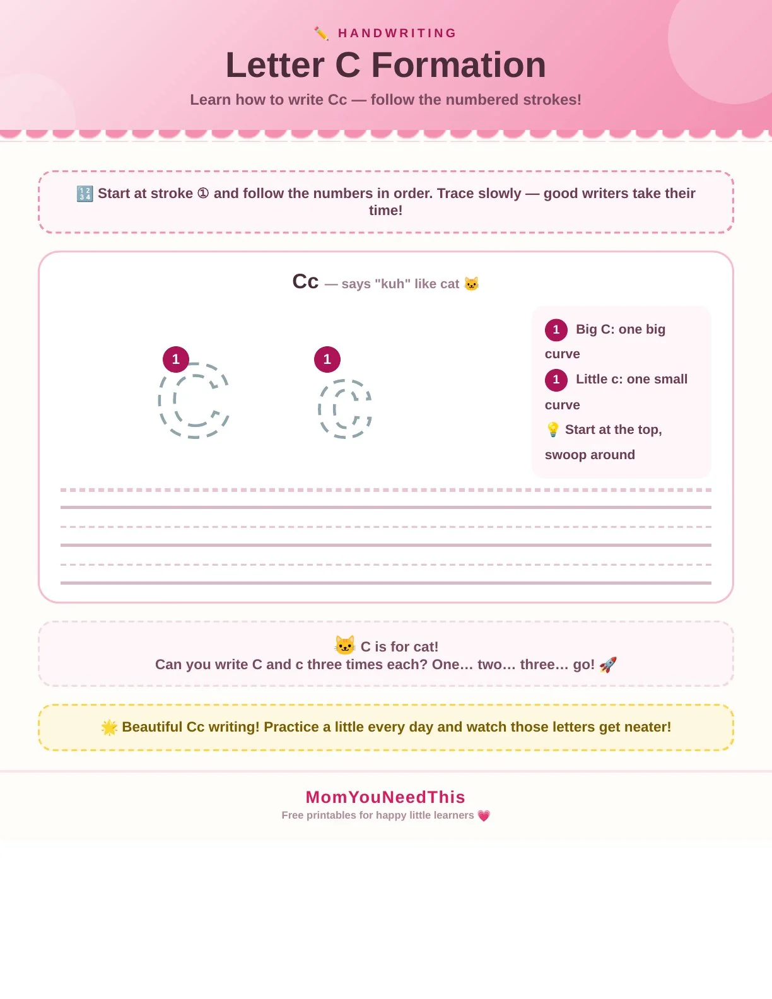

Letter C Formation Practice Trace And Write The Uppercase Letter C
Help your little learner practise forming the uppercase letter C with this fun, no-prep tracing printable. Big, clear letter guides make it easy for little hands.
Quick Answer
The friendliest formation in the alphabet: C is a single curve. This free printable gives preschoolers guided tracing rows for the uppercase letter C — where to start, which way to sweep, and when to stop so the curve stays open. Children trace, then try on their own, while the /k/ sound connection (cat, car, cake) ties the shape to its sound. Print at home with no signup needed.
At a Glance
- Ages: Preschoolers
- Activity: Forming uppercase C — a single friendly curve
- Skills: Letter formation and stroke order
- Format: Printable worksheet (PDF)
- Cost: Free, no signup
🐱 Cat
🚗 Car
🍰 Cake

✏️ Trace, Then Try On Your Own
Start with a finger: trace the big letter C in the air or on the table while you say how it goes. Then move to the worksheet — trace each C slowly, saying the letter name and its sound: “C says /k/, like cat.” Finish with the try-it-yourself row.
⬇️ Download Free Printable 🖨️ Print🎁 Free printable for toddlers & preschoolers
👆 Say It While You Trace
Say the letter name and its sound each time your child traces. Words like cat, car and cake all begin with the C sound — naming them as the pencil moves ties the shape to the sound.
🎯 Keep It Short And Sweet
C is a one-move letter, so a few minutes really is plenty — the risk is rushing and closing the curve into an O. Slow, big Cs beat fast small ones. Stop while it is still fun, praise the C with the clearest gap, and come back another day.
🎨 Keep Exploring Free Letter Activities
More alphabet learning activities are added regularly for toddlers and preschoolers.
🎁 View All Free Resources✏️ How To Form The Letter C
Letter C is formed like this. C is the simplest formation in this set: one move. Start near the top, sweep around in a big curve and stop before the circle closes — the gap on the right is what makes it a C and not an O. Small c is the identical curve drawn smaller, so a child who can form the capital already owns the lowercase.
Sound and shape travel together on this page: every sweep of the curve is a chance to cough out the /k/ sound — c-c-cat. Letters learned as a movement plus a sound are remembered far better than letters learned as pictures to copy.
The mistake to watch for on this page is closing the curve all the way into an O. If your child's C keeps sealing shut, trace it together and say “stop before it closes” at the gap.
🖨️ How to Use This Printable
Get started in minutes — everything here is free and made for busy parents.
- Download the printable. Tap the download button to save the free Free Letter C Formation Practice file to your device.
- Print it out. Use any home printer and regular paper — cardstock works great for pages little hands will use again and again. The print button opens the full-size page in a new tab if you prefer to print from there.
- Learn together. Sit with your child and say the strokes out loud as they trace the letter C — talking through the moves is what turns copying into memory. Short sessions work best.
- Explore more. Check the free printables linked below for your next activity.
❓ Free Letter C Formation Practice FAQs
Is this Free Letter C Formation Practice printable free?
Yes — every printable on MomYouNeedThis is 100% free to download and print. No signup, no payment, just tap the download button and print the C formation page as often as your child wants more practice.
How do I use this letter c printable?
Print the page and trace together, one curve at a time: start near the top, sweep around, and stop before it closes. Say the letter's name as the pencil moves. Short, playful sessions work better than long lessons for little learners.
What literacy skills does this practice?
Formation, pencil control, and letter-sound knowledge — with a bonus: C's curve is the same shape in both cases, so mastering the capital quietly teaches the lowercase too. Paired with its /k/ sound in words like cat, car and cake, this page covers the core pre-writing skills that prepare children for school handwriting.
🔗 More Free Printables You’ll Love
Pair this printable with more free learning activities from the MomYouNeedThis library.
- ✏️ Free Letter D Formation PracticeFree printable letter d formation practice for little learners.
- 🎨 Free Letter C Coloring PageFree printable letter c coloring page for little learners.
- ✏️ Free Uppercase Letter C TracingFree printable uppercase letter c tracing for little learners.
- ✏️ Free Lowercase Letter C TracingFree printable lowercase letter c tracing for little learners.